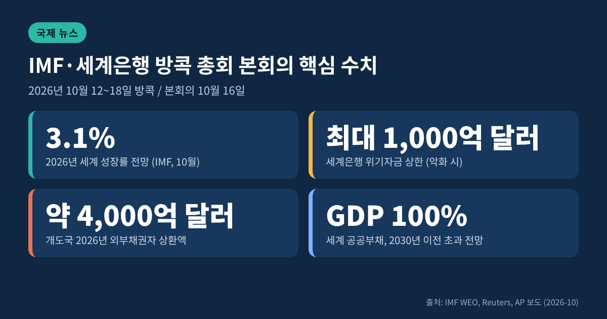
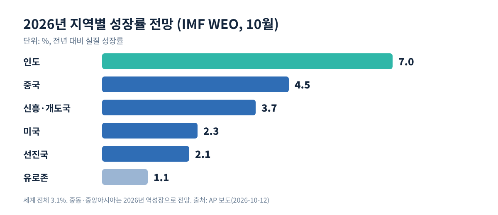
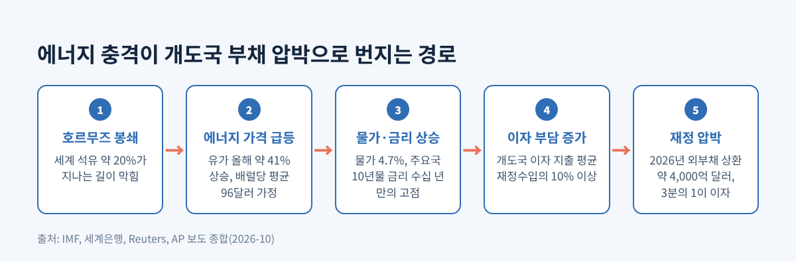
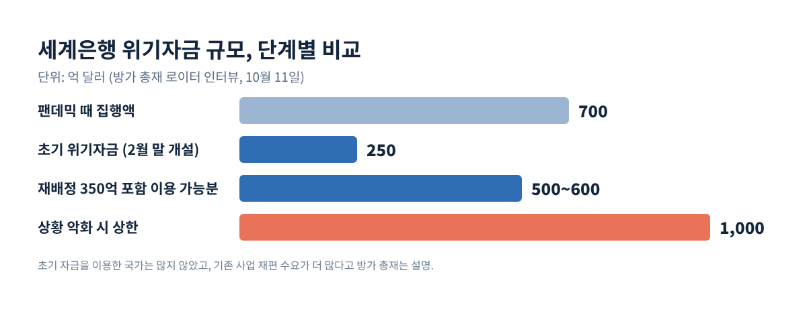
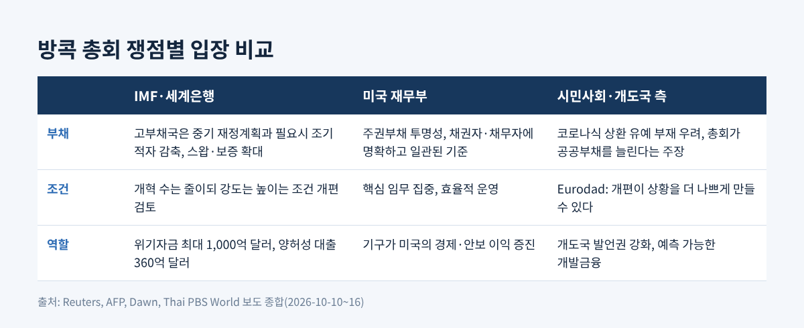

IMF 방콕 총회 본회의, 전쟁 위기자금 1000억 달러와 부채 쟁점 정리

3줄 요약
- 10월 16일 방콕 본회의에서 IMF 총재는 국채금리 급등과 AI 격차를 경고하며 고부채국의 조기 재정 정비를 주문했습니다.
- 세계은행은 중동전 충격을 받은 30~40개국과 위기 지원을 협의 중이며, 상황이 악화되면 최대 1,000억 달러까지 열 수 있다고 밝혔습니다.
- 미국 재무장관은 불참했고, 폐막 격인 IMFC 성명은 10월 17일로 예정되어 아직 나오지 않았습니다.
오늘은 10월 12일부터 열린 IMF·세계은행 방콕 연차총회가 본회의 단계에서 무엇을 남겼는지 정리해 보려 합니다.
전쟁, 에너지, 부채라는 세 가지 변수가 한 테이블에 오른 자리였습니다.
확정된 합의문은 아직 없으므로, 오늘까지 확인된 발언과 수치를 중심으로 쟁점을 짚겠습니다.
■ 무슨 일이 있었나: 본회의와 3년 만의 워싱턴 밖 총회
2026 연차총회는 10월 12일부터 18일까지 방콕 퀸 시리킷 국립컨벤션센터에서 열리고 있습니다.
워싱턴 밖에서 열리는 것은 2023년 모로코 이후 3년 만이고, 태국 개최는 1991년 이후 두 번째입니다.
게오르기에바 IMF 총재는 등록 인원이 1만 8천 명으로 모로코 때보다 4천 명 많다고 밝혔습니다. 다른 매체는 1만 5천 명, 1만 명 이상으로 적었습니다. 집계 기준이 달라 수치가 엇갈립니다.
10월 16일 본회의에서 게오르기에바 총재는 올해 세계 성장률 전망을 3.1%로 제시했습니다.
10월 13일 발표된 세계경제전망(WEO)은 7월의 3.0%보다 소폭 올린 수치였습니다. 에너지 공급 충격이 성장을 누르는 한편, AI 관련 투자가 이를 상쇄하고 있다는 설명입니다.
분쟁 영향국은 크게 낮아졌고, 미국·중국·인도처럼 AI 가치사슬에 편입된 경제는 올랐습니다.

■ 왜 중요한가: 전쟁이 만든 에너지 충격과 부채의 만남
배경에는 2월 말 시작된 미국·이스라엘의 이란 공격과 그 이후의 호르무즈 해협 봉쇄가 있습니다.
이 해협은 평시 세계 석유의 약 20%가 지나는 길입니다. 개전 이후 각국이 풀어 온 비축유는 10억 배럴이 넘고, 접근 가능한 저장분이 줄고 있다는 업계 전언도 있습니다.
IMF 전망은 유가가 올해 약 41% 오르고 평균 배럴당 96달러가 된다고 가정합니다. 물가상승률은 4.7%로 지난해 4.1%에서 올랐습니다.
여기에 부채가 겹칩니다.
세계 공공부채는 제2차 세계대전 이후 최고 수준이고, 2030년 이전에 GDP 대비 100%를 넘을 것으로 전망됩니다.
게오르기에바 총재는 미국·독일·일본의 10년물 국채금리가 각각 수십 년 만의 최고 수준에 이르렀다고 짚었습니다.
금리가 오르면 정부의 이자 부담이 커집니다. 에너지 가격이 오르면 세수 여력은 줄어듭니다. 두 흐름이 동시에 오는 것이 이번 총회의 근심입니다.
개도국의 사정은 더 빠듯합니다.
세계은행에 따르면 개도국이 2026년에 외부 채권자에게 갚아야 할 돈은 약 4,000억 달러이고, 그중 3분의 1이 이자입니다.
IMF 자료로는 이자 지출이 평균 재정수입의 10%를 넘고, 저소득국 다수는 15% 안팎에 이릅니다.

■ 세계은행의 위기자금: 250억 달러에서 최대 1,000억 달러까지
방가 세계은행 총재는 로이터 인터뷰에서 30~40개국과 위기 지원을 협의 중이라고 말했습니다.
개전 직후 열어 둔 위기자금은 250억 달러였지만, 실제로 쓴 나라는 많지 않았습니다.
기존 승인 사업을 재배정한 350억 달러를 더하면 이용 가능 규모는 500억~600억 달러입니다. 상황이 나빠지면 최대 1,000억 달러까지 가능하다는 것이 방가 총재의 설명입니다. 팬데믹 때 집행한 700억 달러를 웃도는 규모입니다.
흥미로운 대목은 수요의 모양입니다.
방가 총재는 새 위기 창구보다 이미 진행 중인 사업의 내용을 바꾸려는 나라가 더 많다고 말했습니다.
압박은 있지만 아직 폭발하지는 않았다는 뜻으로 읽힙니다. 그는 "준비가 되어 있고 관여하고 있다"는 취지로 답했습니다.
부채 쪽에서는 구체적 도구도 언급됐습니다.
앙골라와 코트디부아르에는 부채-개발 스왑이 마련되었고, 아르헨티나에는 포트폴리오 보증이 제공됩니다.
비싼 옛 부채를 세계은행 보증을 붙인 값싼 부채로 바꾸는 사업도 14~15건 대기 중입니다.
민간자본 동원은 6월 마감 회계연도에 사상 최대인 1,120억 달러였습니다. 다만 이 가운데 저소득국으로 간 몫은 약 30억 달러에 그쳤습니다.

■ 쟁점 1: 고부채국에 무엇을 요구할 것인가
게오르기에바 총재는 연준, ECB, 일본은행의 최근 긴축을 지지했습니다. 지연하면 나중에 더 가파른 인상이 필요할 수 있다는 논리입니다.
고부채국에는 신뢰할 만한 중기 재정계획과 필요하면 조기 적자 감축을 주문했고, "왜 필요한지 정책당국이 설명해야 한다"는 취지로 말했습니다.
경제 불균형에 대한 처방도 나왔습니다. 미국은 저축을 늘리고, 중국은 소비를, 유럽은 투자를 키우라는 요구입니다.
반론도 만만치 않습니다.
IMF가 검토 중인 대출 조건 개편안은 개혁 항목 수를 줄이는 대신 더 강도 높은 개혁을 요구하는 방향입니다.
유럽 부채·개발 네트워크(Eurodad)의 이올란다 프레스니요는 이 개편이 "상황을 더 나쁘게 만들 것"이라고 우려했습니다.
케냐는 채무 재조정을 피했지만, 지출 삭감과 증세 과정에서 청년층 시위가 번진 사례로 거론됩니다.
G20 외교관들은 코로나 시기 같은 채무상환 유예에 대한 의욕이 거의 없다고 로이터에 전했습니다.
방콕 거리에서도 목소리가 나왔습니다.
10월 15일 약 700명이 참가한 시위대는 총회가 공공부채를 늘린다고 주장했습니다. 경찰은 행사장 24곳 인근의 집회를 10월 20일까지 금지했습니다.
■ 쟁점 2: 미국의 빈자리와 요구
스콧 베센트 미국 재무장관은 "국내 일정"을 이유로 불참했습니다.
대표단은 프랜시스 브룩 재무부 부장관과 에린 브라운 국제담당 차관이 이끕니다. AFP는 이란전을 둘러싼 국내 압력과 높은 국채금리를 배경으로 전했는데, 이는 매체의 해석이고 미 당국은 이유를 더 밝히지 않았습니다.
미국은 올해 G20 의장국이기도 해서 불참은 눈에 띕니다.
미 재무부가 내건 목표는 로이터 보도에 따르면 다섯 가지입니다.
주권부채의 투명성 제고, 채권자와 채무자에 대한 명확하고 일관된 기준, 각국의 안정·성장 회복 지원, IMF와 세계은행의 핵심 임무 집중, 그리고 국제금융기구가 미국의 경제·국가안보 이익을 증진하도록 하는 것입니다.
핵심 임무 집중을 효율의 문제로 보는 시각이 있는 반면, 개도국 입장에서는 기후나 개발 같은 분야가 줄어들 수 있다는 걱정으로 이어질 수 있습니다. 어느 쪽이 맞는지는 이번 총회 성명이 나와야 가늠할 수 있습니다.
케빈 워시 연준 의장은 참석하며, 10월 16일 오전 게오르기에바 총재와 공개 대담이 예정되어 있었습니다. 다만 대담 내용은 아직 확인되지 않았습니다.

■ 함께 짚을 대목: AI와 파키스탄 의장직
게오르기에바 총재는 AI를 "느리게 움직이는 쓰나미"라 불렀습니다. 전 세계 일자리의 약 40%가 영향을 받는다고 추정합니다.
본회의에서는 사이버 취약점이 악용되기까지의 시간이 수개월에서 수시간, 곧 수분으로 줄고 있다는 경고도 나왔습니다. 청년 실업, 세수 잠식, 금융 불안도 위험 목록에 올랐습니다.
한편 10월 16일 파키스탄 경제부는 아흐드 칸 치마 장관이 내년 IMF·세계은행 총회 의장으로 지명되었다고 발표했습니다. 1953년 이후 처음입니다.
치마 장관은 개도국의 발언권 강화와 예측 가능한 개발금융을 우선순위로 꼽았습니다.
파키스탄은 70억 달러 확대신용(EFF)과 14억 달러 회복·지속가능성 프로그램을 이용하는 당사자이기도 합니다. 의장국이 채무국이라는 점은 상징성이 작지 않습니다.
■ 전망: 10월 17일 IMFC 성명과 남은 변수
첫 번째 관전 포인트는 10월 17일 IMFC 성명입니다.
전쟁, 부채, 불균형 가운데 어디까지 문구에 담기는지가 관건입니다. 올해 초 중국 측 이견으로 G20 공동성명 합의가 무산되었다는 보도가 있었던 만큼, 합의문 형식 자체가 불투명하다는 점도 염두에 두어야 합니다.
두 번째는 IMF의 재원입니다.
IMF는 대출 잔액과 미인출 약정이 약 2,400억 달러이고 남은 대출여력은 그 세 배 안팎이라고 밝혔습니다. 양허성 대출은 360억 달러로 과거 평균의 약 네 배입니다.
다만 저소득국 지원 신탁(PRGT)의 재원 확보는 목표 90%에 크게 못 미치는 48% 수준입니다. EU의 노력이 더해져도 74%입니다.
세 번째는 전쟁의 길이입니다.
IMF의 성장 전망은 호르무즈 물동량이 3월에 재개된다는 가정에 기대고 있습니다. 이 가정이 틀어지면 수치도 달라집니다.
방가 총재가 우려 1순위로 엘니뇨 하나가 아니라 비싼 비료와 에너지 비용, 누적 부채의 결합을 꼽은 것도 같은 맥락입니다.
정리하면 이렇습니다.
이번 총회의 메시지는 성장률 숫자보다 "충격이 겹쳐 오고, 여력이 고르지 않다"는 쪽에 있었습니다.
다시 말해 이번 방콕 총회가 던진 질문은 하나입니다. 돈이 충분한가가 아니라, 누가 어떤 조건으로 감당하는가입니다.
IMFC 성명이 그 질문에 얼마나 답할지, 내일의 문구를 기다려 보겠습니다.
※ 이 글은 2026년 10월 16일 기준 보도를 바탕으로 했으며, 이후 발표에 따라 내용이 달라질 수 있습니다.